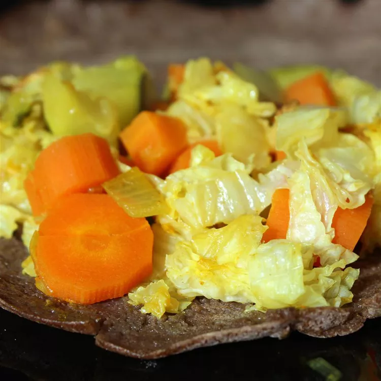

Tikil Gomen

This tikil gomen recipe is one of many Ethiopian dishes. It is typically served alongside other dishes on injera flatbread. It's very simple and tastes great. There are many variations of this recipe; it can be prepared with just the cabbage, carrots and potatoes, meat, and so on.
Ingredients
- 3 tablespoons vegetable oil
- ½ onion, thinly sliced lengthwise
- 1 cup chopped carrots
-
1 teaspoon minced garlic
-
¼ teaspoon ground turmeric (Optional)
-
salt and ground black pepper to taste
-
⅔ head cabbage, diced and rinsed
-
2 tablespoons water, or as needed
Directions
- Heat oil in a pot over medium heat. Cook onion in hot oil until translucent, about 5 minutes. Stir in carrots, garlic, turmeric, salt, and black pepper. Cook and stir until flavors are combined, about 7 minutes. Add cabbage and mix well.
- Cover the pot, reduce heat to medium-low, and cook until cabbage is tender but not completely soft, about 20 minutes. Add water if vegetables look dry.